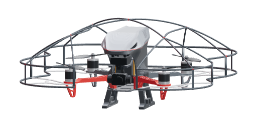
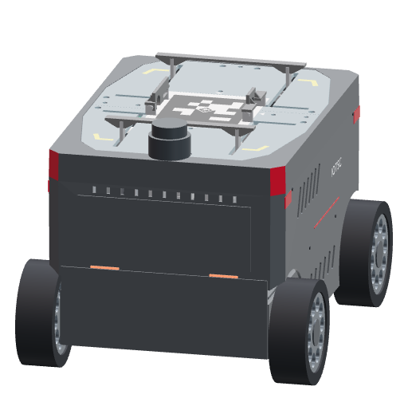

Atomori
OPERATIONS
空地协同巡检平台
监控总览
巡检记录
设备管理
实时模式
--:--:--
无人机
UAV-01
未连接
飞控详情 ↗
实时图像
未连接
等待有效画面
—
＋
可见光
热成像
下视
飞行遥测
等待数据
＋ 标记疑点
电池电量
—
电池电压
—
下视测距
—
离地高度
—
姿态不可用
横滚
—
俯仰
—
图传延迟
—
无人车
UGV-01
未连接
车端控制 ↗
地面图传
未连接
等待实时画面
—
地面图传
标记疑点
车辆遥测
等待数据
查看点云 ↗
电池电量
—
行驶速度
—
环境温度
—
相对湿度
—
传感器状态
烟雾检测
—
火焰
—
一氧化碳
—
声音检测
—
等待定位数据
未连接
当前巡检任务
进行中
任务详情 ↗
综合管廊 A 区 · 日常巡检
68
%
✓
设备自检
✓
进入管廊
○
协同巡检
任务归档
已巡检
126 m
用时
08:42
▲
疑点
01
空地协同状态
机载未连接
N
S
W
E


y
x
水平偏移
—
Δx
—
Δy
—
相对高度
—
航向偏差
—
机载视觉未连接
最近记录
查看全部 ↗
正在读取事件…
×